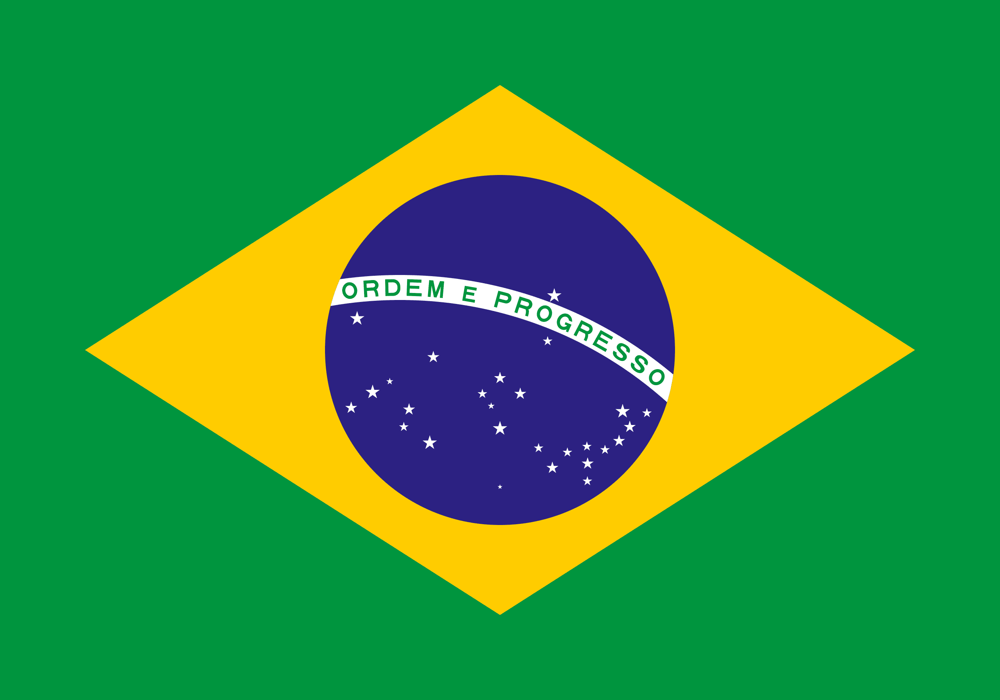

My name is Bruno, I'm 22 and from São Paulo, Brazil. I want to improve my skills with programming, but my real objective is to become a data analyst and work with what I love most: Soccer.
About Me
São Paulo, Brazil

Brazil, the largest country in South America, is renowned for its diverse culture, vibrant music, and natural beauty. Spanning vast landscapes, it includes the Amazon Rainforest, Pantanal wetlands, and iconic beaches like Copacabana. With Portuguese as its official language, Brazil reflects a rich blend of indigenous, African, and European influences. Its economy is driven by agriculture, mining, energy, and tourism. Finally, most importantly, it's the country of soccer.